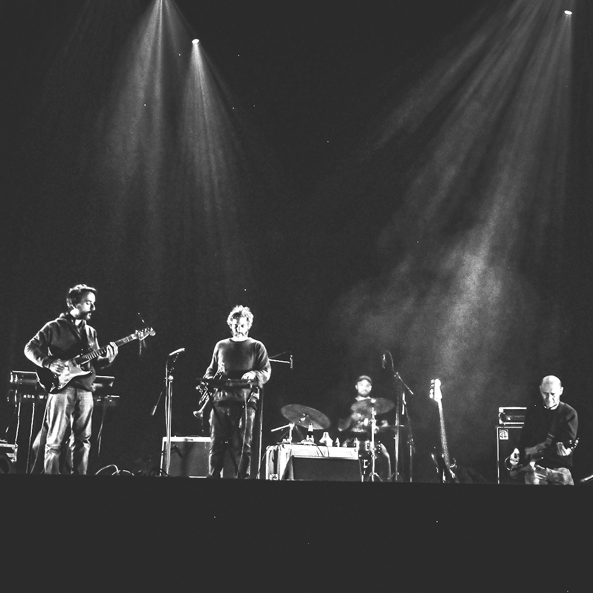

Sobre el álbum — Reel Ghosts & River Echoes
Reel Ghosts & River Echoes es un trabajo que cabalga lentamente por los paisajes del litoral, donde el viento, el río y los juncos se entrelazan. Los diferentes sonidos evocan fantasmas arquetípicos, en la frontera donde la realidad se diluye y se adentra en el terreno del espíritu. Todo sucede a la vez: sonidos, ecos, silencios y melodías se funden en un viaje hacia el todo, donde el tiempo se expande y la escucha se vuelve experiencia viva.
El álbum es un collage de texturas, con capas y profundidad, donde se pueden saborear instrumentos diversos como trompetas, cuerdas, baterías, guitarras, bajos, samples, cuencos, harmonio, synths y grabaciones de campo, todos amalgamados con las texturas de cinta de la grabación en portastudio. Un puzzle experimental, con piezas improvisadas, que el oyente termina de ensamblar con su propia imaginación, dando sentido y forma a cada instante de la escucha.
About the album — Reel Ghosts & River Echoes
Reel Ghosts & River Echoes rides slowly across the landscapes of the litoral, where wind, river, and reeds intertwine. The sounds evoke archetypal ghosts, dwelling at the threshold where reality dissolves and enters the realm of spirit. Everything happens at once: sounds, echoes, silences, and melodies merge into a journey towards the whole, where time expands and listening becomes a living experience.
The album is a collage of textures, with depth and layering, where one can savor diverse instruments such as trumpets, strings, drums, guitars, bass, samples, bowls, harmonium, synths, and field recordings—all fused with the magnetic grain of tape on a portastudio. An experimental puzzle, filled with improvised fragments, left open for the listener to assemble with their own imagination, giving shape and meaning to each fleeting moment.
The Ivonne Van Cleef Orquesta
T.I.V.C.O. es un proyecto instrumental que construye paisajes sonoros cinematográficos a base de capas de guitarra, loops de bajo, sintetizadores y trompetas. Su música, digna de una película de Sergio Leone, conecta el amor por los westerns con un profundo respeto por el post-rock, creando atmósferas inquietantes y envolventes. La distorsión, el delay, la reverb y los efectos transportan al oyente a un viaje psicodélico a través de un viaje instrospectivo, mezclando desert ambient y post-rock experimental, con un sonido que va de lo oscuro a lo sublime. Con más de 20 trabajos publicados y colaboraciones internacionales, la banda combina creatividad, técnica e improvisación para ofrecer un sonido único. En 2024 brillaron en Dunk!Fest en Bélgica, uno de los festivales de post-rock más importantes del mundo, dejando claro su importancia y legado dentro del panorama de la música exprimental a nivel mundial.
The Ivonne Van Cleef Orquesta
T.I.V.C.O. is an instrumental project crafting cinematic soundscapes with layered guitars, bass loops, synthesizers, and trumpets. Their music, worthy of a Sergio Leone film, bridges a love for Westerns with deep reverence for post-rock, creating haunting and immersive atmospheres. Distortion, delay, reverb, and effects take the listener on a psychedelic, introspective journey, blending desert ambient and experimental post-rock, with soundscapes that shift from dark to sublime.
With over 20 releases and international collaborations, the band combines creativity, skill, and improvisation to deliver a unique sonic identity. In 2024, they shined at Dunk!Fest in Belgium, one of the world’s leading post-rock festivals, underscoring their significance and legacy within the global experimental music scene.

T.I.V.C.O. live @dunkfestival 2024 at Ghent, Belgium.
Objetivo
Buscamos apoyo para edición internacional (vinilo/cassette/digital), distribución y prensa. Interesados escribir a contacto@jitjotrecords.com.
Goal
We are seeking international release support (vinyl/cassette/digital), distribution and press. Inquiries: contacto@jitjotrecords.com.
Jit Jot Records
Sello y productora independiente de Rosario, Argentina. Ediciones artesanales en formatos físicos y curaduría de eventos que celebran la diversidad musical y el espíritu DIY.
Jit Jot Records
Independent label and production house from Rosario, Argentina. Handmade physical editions and events celebrating musical diversity and the DIY spirit.